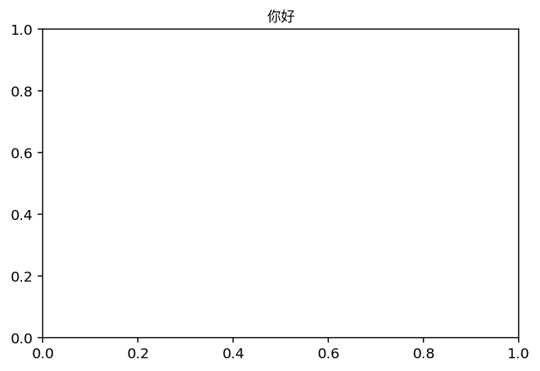
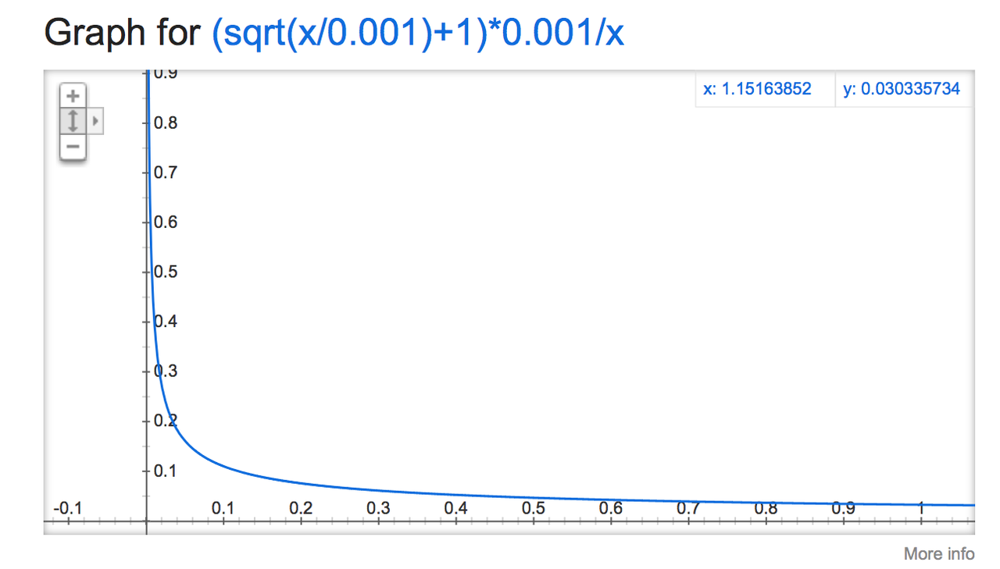

TextCNN with Pytorch and Torchtext on Colab
PyTorch is a really powerful framework to build the machine learning models. Although some some features is missing when compared with TensorFlow (For example, the early stop fucntion, History to draw plot), its code style is more intuitive.
Torchtext is a NLP package which is also made by =pytorch= team. It provide a way to read text, processing and iterate the texts.
Google Colab is a Jypyter notebook environment host by Google, you can use free GPU and TPU to run your modal.
Here is a simple tuturial to build a TextCNN modal and run it on Colab.
The TextCNN paper was published by Kim in 2014. The model's idea is pretty simple, but the performance is impressive. If you trying to solve the text classificaton problem, this model is a good choice to start with.
The main architechture is shown below:

It uses different kenels to extract text features, then use the softmax regerission to classify text base on the featrues.
Now we can build this model step by step.
First build the model. The model I use is CNN-multichannel, which contains two sets of word emmbedding. Both of them is the copy of word embedding generate from corpus, but only one set will update embedding during training.
The code is below:
class textCNNMulti(nn.Module):
def __init__(self,args):
super().__init__()
dim = args['dim']
n_class = args['n_class']
embedding_matrix=args['embedding_matrix']
kernels=[3,4,5]
kernel_number=[150,150,150]
self.static_embed = nn.Embedding.from_pretrained(embedding_matrix)
self.non_static_embed = nn.Embedding.from_pretrained(embedding_matrix, freeze=False)
self.convs = nn.ModuleList([nn.Conv2d(2, number, (size, dim),padding=(size-1,0)) for (size,number) in zip(kernels,kernel_number)])
self.dropout=nn.Dropout()
self.out = nn.Linear(sum(kernel_number), n_class)
def forward(self, x):
non_static_input = self.non_static_embed(x)
static_input = self.static_embed(x)
x = torch.stack([non_static_input, static_input], dim=1)
x = [F.relu(conv(x)).squeeze(3) for conv in self.convs]
x = [F.max_pool1d(i, i.size(2)).squeeze(2) for i in x]
x = torch.cat(x, 1)
x = self.dropout(x)
x = self.out(x)
return x
Second, convert text into word index, so each sentence become a vector for training.
TEXT = data.Field(lower=True,batch_first=True)
LABEL = data.Field(sequential=False)
train, val, test = datasets.SST.splits(TEXT, LABEL, 'data/',fine_grained=True)
TEXT.build_vocab(train, vectors="glove.840B.300d")
LABEL.build_vocab(train,val,test)
train_iter, val_iter, test_iter = data.BucketIterator.splits(
(train, val, test), batch_sizes=(128, 256, 256),shuffle=True)
=Field= defines how to process text, here is the most common parameters:
sequential – Whether the datatype represents sequential data. If False, no tokenization is applied. Default: True.
use_vocab – Whether to use a Vocab object. If False, the data in this field should already be numerical. Default: True.
preprocessing – The Pipeline that will be applied to examples using this field after tokenizing but before numericalizing. Many Datasets replace this attribute with a custom preprocessor. Default: None.
batch_first – Whether to produce tensors with the batch dimension first. Default: False.
=datasets.SST.splits= will load the =SST= datasets, and split into train, validation, and test Dataset objects.
=build_vocab= will create the Vocab object for Field, which contains the information to convert word into word index and vice versa. Also, the word embedding will save as =Field.Vocab.vectors=. =vectors= contains all of the word embedding. Torchtext can download some pretrained vectors automaticaly, such as =glove.840B.300d=, =fasttext.en.300d=. You can also load your vectors in this way, =xxx.vec= should be the standard word2vec format.
from torchtext.vocab import Vectors
vectors = Vectors(name='xxx.vec', cache='./')
TEXT.build_vocab(train, val, test, vectors=vectors)
=data.BucketIterator.splits= will returns iterators that loads batches of data from datasets, and the text in same batch has similar lengths.
Now, we can start to train the model. First we wrap some parameters into =args=, it contains settings like output class, learning rate, log inverval and so on.
args={}
args['vocb_size']=len(TEXT.vocab)
args['dim']=300
args['n_class']=len(LABEL.vocab)-1
args['embedding_matrix']=TEXT.vocab.vectors
args['lr']=0.001
args['momentum']=0.8
args['epochs']=180
args['log_interval']=100
args['test_interval']=500
args['save_dir']='./'
Finally, we can train the model.
model=textCNNMulti(args)
model.cuda()
optimizer = torch.optim.SGD(model.parameters(), lr=args['lr'],momentum=args['momentum'])
criterion = nn.CrossEntropyLoss()
steps=0
for epoch in range(1, args['epochs']+1):
for i,data in enumerate(train_iter):
steps+=1
x, target = data.text, data.label
x=x.cuda()
target.sub_(1)
target=target.cuda()
output = model(x)
loss = criterion(output, target)
optimizer.zero_grad()
loss.backward()
optimizer.step()
Here is the full colab file: textcnn.ipynb
Ref:
CSRF in Django
CSRF(Cross-site request forgery) is a way to generate fake user request to target website. For example, on a malicious website A, there is a button, click it will send request to www.B.com/logout. When the user click this button, he will logout from website B unconsciously. Logout is not a big problem, but malicious website can generate more dangerous request like money transfer.
Django CSRF protection
Each web framework has different approach to do CSRF protection. In Django, the validation process is below:
- When user login for the first time, Django generate a
=csrf_secret=, add random salt and encrypt it as A, save A to cookie=csrftoken=. - When Django processing tag
={{ csrf_token }}=or={% csrf_token %}=, it read=csrftoken=cookie A, reverse it to=csrf_secret=, add random salt and encrypt it as B, return corresponding HTML. - When Django receive POST request, it will retrive cookie
=csrftoken=as A, and tries to get=csrfmiddlewaretoken=value B from POST data, if it does not exist, it will get header=X-CSRFToken=value as B. Then A and B will be reversed to=csrf_secret=. If the values are identical, the validation is passed. Otherwise, a 403 error will raise.
Django CSRF Usage
Form
<form>
{% csrf_token %}
</form>
Single AJAX request
$.ajax({
data: {
csrfmiddlewaretoken: '{{ csrf_token }}'
},
Multiple AJAX request
function getCookie(name) {
var cookieValue = null;
if (document.cookie && document.cookie !== '') {
var cookies = document.cookie.split(';');
for (var i = 0; i < cookies.length; i++) {
var cookie = jQuery.trim(cookies[i]);
// Does this cookie string begin with the name we want?
if (cookie.substring(0, name.length + 1) === (name + '=')) {
cookieValue = decodeURIComponent(cookie.substring(name.length + 1));
break;
}
}
}
return cookieValue;
}
var csrftoken = getCookie('csrftoken');
function csrfSafeMethod(method) {
// these HTTP methods do not require CSRF protection
return (/^(GET|HEAD|OPTIONS|TRACE)$/.test(method));
}
$.ajaxSetup({
beforeSend: function(xhr, settings) {
if (!csrfSafeMethod(settings.type) && !this.crossDomain) {
xhr.setRequestHeader("X-CSRFToken", csrftoken);
}
}
});
Ref:
Create Node Benchmark in Py2neo
Recently, I'm working on a neo4j project. I use =Py2neo= to interact with graph db. Alghough =Py2neo= is a very pythonic and easy to use, its performance is really poor. Sometimes I have to manually write cypher statement by myself if I can't bear with the slow excution. Here is a small script which I use to compare the performance of 4 diffrent ways to insert nodes.
import time
from graph_db import graph
from py2neo.data import Node, Subgraph
def delete_label(label):
graph.run('MATCH (n:{}) DETACH DELETE n'.format(label))
def delete_all():
print('delete all')
graph.run('match (n) detach delete n')
def count_label(label):
return len(graph.nodes.match(label))
def bench_create1():
print('Using py2neo one by one')
delete_label('test')
start = time.time()
tx = graph.begin()
for i in range(100000):
n = Node('test', id=i)
tx.create(n)
tx.commit()
print(time.time() - start)
print(count_label('test'))
delete_label('test')
def bench_create2():
print('Using cypher one by one')
delete_label('test')
start = time.time()
tx = graph.begin()
for i in range(100000):
tx.run('create (n:test {id: $id})', id=i)
if i and i % 1000 == 0:
tx.commit()
tx = graph.begin()
tx.commit()
print(time.time() - start)
print(count_label('test'))
delete_label('test')
def bench_create3():
print('Using Subgraph')
delete_label('test')
start = time.time()
tx = graph.begin()
nodes = []
for i in range(100000):
nodes.append(Node('test', id=i))
s = Subgraph(nodes=nodes)
tx.create(s)
tx.commit()
print(time.time() - start)
print(count_label('test'))
delete_label('test')
def bench_create4():
print('Using unwind')
delete_label('test')
start = time.time()
tx = graph.begin()
ids = list(range(100000))
tx.run('unwind $ids as id create (n:test {id: id})', ids=ids)
tx.commit()
print(time.time() - start)
print(count_label('test'))
delete_label('test')
def bench_create():
create_tests = [bench_create1, bench_create2, bench_create3, bench_create4]
print('testing create')
for i in create_tests:
i()
if __name__ == '__main__':
bench_create()
Apparently, using cypher with =unwind= keyword is the fastest way to batch insert nodes.
testing create
Using py2neo one by one
96.09799289703369
100000
Using cypher one by one
9.493892192840576
100000
Using Subgraph
7.638832092285156
100000
Using unwind
2.511630058288574
100000
The above result is baed on =http= protocal. An very interesting result is that, =bolt= protocal will decrease the time of the first method, but double the time of sencond method. That's wired, maybe =py2neo= has some special opitimusation when doing batch insert on =bolt= protocal? But I have no idea why insert one by one with cypher is 2x slower. Here is the result of =bolt= protocal.
testing create
Using py2neo one by one
51.73185706138611
100000
Using cypher one by one
22.051995992660522
100000
Using Subgraph
8.81674599647522
100000
Using unwind
2.8623900413513184
100000
Deploy Nikola OrgMode on Travis
Recently, I enjoy using =Spacemacs=, so I decided to switch to org file from Markdown for writing blog. After several attempts, I managed to let Travis convert org file to HTML. Here are the steps.
Install orgmode plugin
First you need to install orgmode plugin on your computer following the official guide: Nikola orgmode plugin.
Edit =conf.el=
=OrgMode= will convert to HTML to display on Nikola. Orgmode plugin will call Emacs to do this job. When I run =nikola build=, it shows this message: =Please install htmlize from https://github.com/hniksic/emacs-htmlize=. I'm using =Spacemacs=, the =htmlize= package is already downloaded if the =org= layer is enabled. I just need to add htmlize folder to load-path. So here is the code:
(setq dir "~/.emacs.d/elpa/27.0/develop/")
(if(file-directory-p dir)
(let ((default-directory dir))
(normal-top-level-add-subdirs-to-load-path)))
(require 'htmlize)
This package is also needed on Travis, the similar approach is required.
Modify =.travis.yml=
Travis is using ubuntu 14.04, and the default Emacs version is 24, and the orgmode version is below 8.0, which not match the requirements. The easiest solution is to update Emacs to 25. So in the =before_install= section, add these code:
- sudo add-apt-repository ppa:kelleyk/emacs -y
- sudo apt-get update
In the =install= section, add these code:
- sudo apt-get remove emacs
- sudo apt autoremove
- sudo apt-get install emacs25
The default emacs doesn't contains =htmlize= package. So add =git clone https://github.com/hniksic/emacs-htmlize ~/emacs-htmlize= into =before_install= section.
Finally, modify =conf.el= for Travis Emacs, add GitHub repo to =load-path=: =(add-to-list 'load-path "~/emacs-htmlize/")=
Voila, the org file should show up.
The full =.travis.yml= is below:
language: python
cache: apt
sudo: false
addons:
apt:
packages:
- language-pack-en-base
branches:
only:
- src
python:
- 3.6
before_install:
- sudo add-apt-repository ppa:kelleyk/emacs -y
- sudo apt-get update
- openssl aes-256-cbc -K $encrypted_a5c638e4bedc_key -iv $encrypted_a5c638e4bedc_iv
-in travis.enc -out travis -d
- git config --global user.name 'bebound'
- git config --global user.email 'bebound@gmail.com'
- git config --global push.default 'simple'
- pip install --upgrade pip wheel
- echo -e 'Host github.com\n StrictHostKeyChecking no' >> ~/.ssh/config
- eval "$(ssh-agent -s)"
- chmod 600 travis
- ssh-add travis
- git remote rm origin
- git remote add origin git@github.com:bebound/bebound.github.io
- git fetch origin master
- git branch master FETCH_HEAD
- git clone https://github.com/hniksic/emacs-htmlize ~/emacs-htmlize
install:
- pip install 'Nikola[extras]'==7.8.15
- sudo apt-get remove emacs
- sudo apt autoremove
- sudo apt-get install emacs25
script:
- nikola build && nikola github_deploy -m 'Nikola auto deploy [ci skip]'
notifications:
email:
on_success: change
on_failure: always
And here is the =conf.el=:
(setq dir "~/.emacs.d/elpa/27.0/develop/")
(if(file-directory-p dir)
(let ((default-directory dir))
(normal-top-level-add-subdirs-to-load-path)))
(add-to-list 'load-path "~/emacs-htmlize/")
(require 'htmlize)
Using Chinese characters in Matplotlib
After searching from Google, here is easiest solution. This should also works on other languages:
import matplotlib.pyplot as plt %matplotlib inline %config InlineBackend.figure_format = 'retina' import matplotlib.font_manager as fm f = "/System/Library/Fonts/PingFang.ttc" prop = fm.FontProperties(fname=f) plt.title("你好",fontproperties=prop) plt.show()
Output: 
LSTM and GRU
LSTM
The avoid the problem of vanishing gradient and exploding gradient in vanilla RNN, LSTM was published, which can remember information for longer periods of time.
Here is the structure of LSTM:
The calculate procedure are:
$f_t$,$i_t$,$o_t$ are forget gate, input gate and output gate respectively. $\tilde{C_t}$ is the new memory content. $C_t$ is cell state. $h_t$ is the output.
Use $f_t$ and $i_t$ to update $C_t$, use $o_t$ to decide which part of hidden state should be outputted.
GRU

$z_t$ is update gate, $r_t$ is reset gate, $\tilde{h_t}$ is candidate activation, $h_t$ is activation.
Compare with LSTM, GRU merge cell state and hidden state to one hiddent state, and use $z_t$ to decide how to update the state rather than $f_t$ and $i_t$.
Update:
Here is a good article: Illustrated Guide to LSTM’s and GRU’s: A step by step explanation
Ref：
Models and Architechtures in Word2vec
Models
CBOW (Continuous Bag of Words)
Use the context to predict the probability of current word.

- Context words' vectors are $\upsilon_{c-n} ... \upsilon_{c+m}$ ($m$ is the window size)
- Context vector $ \hat{\upsilon}=\frac{\upsilon_{c-m}+\upsilon_{c-m+1}+...+\upsilon_{c+m}}{2m} $
- Score vector $z_i = u_i\hat{\upsilon}$, where $u_i$ is the output vector representation of word $\omega_i$
- Turn scores into probabilities $\hat{y}=softmax(z)$
- We desire probabilities $\hat{y}$ match the true probabilities $y$.
We use cross entropy $H(\hat{y},y)$ to measure the distance between these two distributions. $$H(\hat{y},y)=-\sum_{j=1}^{\lvert V \rvert}{y_j\log(\hat{y}_j)}$$
$y$ and $\hat{y}$ is accurate, so the loss simplifies to: $$H(\hat{y},y)=-y_j\log(\hat{y})$$
For perfect prediction, $H(\hat{y},y)=-1\log(1)=0$
According to this, we can create this loss function:
Skip-Gram
Use current word to predict its context.
- We get the input word's vector $\upsilon_c$
- Generate $2m$ score vectors, $uc_{c-m},...,u_{c-1},...,u_{c+m}$.
- Turn scores into probabilities $\hat{y}=softmax(u)$
- We desire probabilities $\hat{y}$ match the true probabilities $y$.
Models
Minimize $J$ is expensive, as the summation is over $\lvert V \rvert$. There are two ways to reduce the computation. Hierarchical Softmax and Negative Sampling.
Hierarchical Softmax
Encode words into a huffman tree, then each word has a Huffman code. The probability of it's probability $P(w\lvert Context(\omega))$ can change to choose the right path from root the che leaf node, each node is a binary classification. Suppose code $0$ is a possitive label, $1$ is negative label. If the probability of a possitive classification is $$ \sigma(X^T_\omega \theta)=\frac{1}{1+e^{-X^T_\omega}} $$
Then the probability of negative classification is $$ 1-\sigma(X^T_\omega \theta) $$
足球's Huffman code is $1001$, then it's probability in each node are
where $\theta$ is prarameter in the node.
The probability of the 足球 is the production of these equation.
Generally,
Negative Sampling
Choose some negitive sample, add the probability of the negative word into loss function. Maximize the positive words' probability and minimize the negitive words' probability.
Let $P(D=0 \lvert \omega,c)$ be the probability that $(\omega,c)$ did not come from the corpus data. Then the objective funtion will be
where $\theta$ is the parameters of the model($\upsilon$ and $u$).
Ref:
Semi-supervised text classification using doc2vec and label spreading
Here is a simple way to classify text without much human effort and get a impressive performance.
It can be divided into two steps:
- Get train data by using keyword classificaton
- Generate a more accurate classification model by using doc2vec and label spreading
Keyword-based Classification
Keyword based classification is a simple but effective method. Extracting the target keyword is a monotonous work. I use this method to automatic extract keyword candicate.
- Find some most common words to classify the text.
- Use this equition to calculate the score of each word appears in the text. $$ score(i) = \frac{count(i)}{all\_count(i)^{0.3}}$$ which $all\_count(i)$ is the word i's wordc ount in all corpus, and $count(i)$ is the word i's word count in positive corpus.
- Check the top words, add it to the final keyword list. Repeat this process.
Finally, we can use the keywords to classify the text and get the train data.
Classification by doc2vec and Label Spreading
Keyword-based classification sometimes produces the wrong result, as it can't using the symantic information in the text. Fortunately, Google has open sourced word2vec, which can be used to produce semantically meaningful word embeddings. Furthermore, sentences can also be converted to vectors by using doc2vec. Sentences which has closed meaning also have short vector distance.
So the problem is how to classify these vectors.
- Using corpus to train the
doc2vecmodel. - Using
doc2vecmodel to convert sentence into vector. - Using label spreading algorithm to train a classify model to classify the vectors.
Parameters in dov2vec
Here are some parameter in gensim's doc2vec class.
window
window is the maximum distance between the predicted word and context words used for prediction within a document. It will look behind and ahead.
In skip-gram model, if the window size is 2, the training samples will be this:(the blue word is the input word)

min_count
If the word appears less than this value, it will be skipped
sample
High frequency word like the is useless for training. sample is a threshold for deleting these higher-frequency words. The probability of keeping the word $w_i$ is:
$$P(w_i) = (\sqrt{\frac{z(\omega_i)}{s}} + 1) \cdot \frac{s}{z(\omega_i)}$$
where $z(w_i)$ is the frequency of the word and $s$ is the sample rate.
This is the plot when sample is 1e-3.

negative
Usually, when training a neural network, for each training sample, all of the weights in the neural network need to be tweaked. For example, if the word pair is ('fox', 'quick'), then only the word quick's neurons should output 1, and all of the other word neurons should output 0.
But it would takes a lot of time to do this when we have billions of training samples. So, instead of update all of the weight, we random choose a small number of "negative" words (default value is 5) to update the weight.(Update their wight to output 0).
So when dealing with word pair ('fox','quick'), we update quick's weight to output 1, and other 5 random words' wight to output 1.
The probability of selecting word $\omega_i$ is $P(\omega_i)$:
$$P(\omega_i) = \frac{ {f(\omega_i)}^{3/4} }{\sum_{j=0}^{n}\left( {f(\omega_j)}^{3/4} \right) }$$
$f(\omega_j)$ is the frequency of word $\omega_j$.
Ref:
Brief Introduction of Label Propagation Algorithm
As I said before, I'm working on a text classification project. I use doc2vec to convert text into vectors, then I use LPA to classify the vectors.
LPA is a simple, effective semi-supervised algotithm. It can use the density of unlabeled data to find a hyperplane to split the data.
Here are the main steps of the algorithm:
- Let $ (x_1,y1)...(x_l,y_l)$ be labeled data, $Y_L = {y_1...y_l} $ are the class labels. Let $(x_{l+1},y_{l+u})$ be unlabeled data where $Y_U = {y_{l+1}...y_{l+u}}$ are unobserved, useally $l \ll u$. Let $X={x_1...x_{l+u}}$ where $x_i\in R^D$. The problem is to estimate $Y_U$ for $X$ and $Y_L$.
- Calculate the similarity of the data points. The most simple metric is Euclidean distance. Use a parameter $\sigma$ to cotrol the weights.
$$w_{ij}= exp(-\frac{d^2_{ij}}{\sigma^2})=exp(-\frac{\sum^D_{d=1}{(x^d_i-x^d_j})^2}{\sigma^2})$$
Larger weight allow labels to travel through easier.
- Define a $(l+u)*(l+u)$ probabilistic transition matrix $T$
$T_{ij}$ is the probability to jump from node $j$ to $i$. If there are $C$ classes, we can define a $(l+u)*C$ label matrix $Y$, to represent the probability of a label belong to class $c$. The initialiation of unlabeled data points is not important.
- Propagate $Y \leftarrow TY$
- Row-normalize Y.
- Reset labeled data's Y. Repeat 3 until Y converges.
In short, let the nearest label has larger weight, then calculate each label's new label, reset labeled data's label, repeat.
Ref: